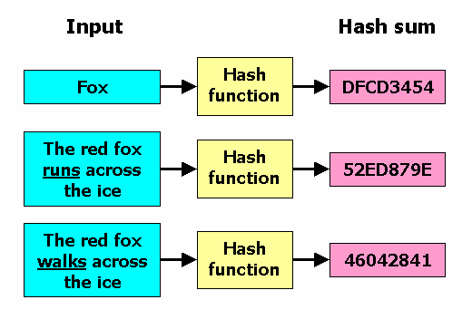
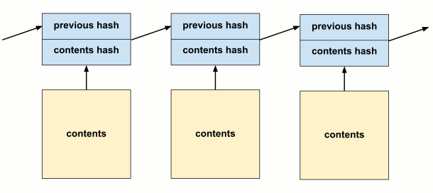

This article will teach you how to write a tiny proof-of-work blockchain, focusing on the Bitcoin implementation. I emphasize "proof-of-work" because as we shall see, this is the key innovation that allows Bitcoin to store information in an "objectively" verifiable way. I wrote this mainly for programmers who are curious about how cryptocurrency works. If you are already an enthusist you probably have seen similar articles. I hope to bring a valuable perspective by focusing on the essentials.
This project will be written in C, although it is easy to translate to other languages.
To start, create a new .c file for the code in the article.
You will also need to include sha-256.h and sha-256.c(1) for
hashes (or use your language's library).
Note: This is a literate program. This means you are reading the source code right now! The final output was created by "weaving" the blocks of code together.
You are probably familiar with hashes, but just to review a hash is a function which maps large pieces of data to short checksums. The essential property of a hash is that it's one way. It's easy to calculate output for an input, impossible to know what input produced a given output, and very difficult to find an alternative piece of data that produces the same output.

To verify a piece of data, hash it and compare it with a trusted hash. Since it's extremely unlikely that different data hashes the same, if they match, we have good reason to believe that the data is valid.
For example, a newspaper could publish the hash of each paper it publishes, so that anyone could verify whether a given paper was valid. Ubuntu publishes the hash of each release, so you know you downloaded the real thing, and not a virus. (Of course, you still have to trust that the hash you got is the right one.)
Hash checksums are helpful for verifying the state of data, at a fixed snapshot in time. But, sometimes we want to ensure the history of some data over time. Two pieces of data which are the same now, may not be equivalent if they took different paths to get there.
A bank account is one such example. We not only care about the final balance, but the full history of each individual deposit and withdrawel. Did our bills get paid? Has someone been withdrawing money from our account? Historical integrity here is essential! Note that a hash of a bank statement is worthless, even if it includes the full record of transactions. As soon as a new transaction comes in, the hash must completely change. Someone could just as easily tamper with past transactions, and the hash couldn't tell you.
A blockchain allows us to verify these kinds of histories. In physics and math this property is called path dependence which leads us to a very philosphical definition: a blockchain is a tool for verifying the integrity of path dependent systems. Just kidding! That's not very helpful. How about this:
A blockchain is a data structure for storing an ordered sequence of records (blocks) in a tamper-resistant way. Given some small header information one can verify whether a given record:
Each block is made up of a header and contents. The contents are just arbitrary data to be stored in the chain. The header contains some info about the block and two hashes:
The hash of the contents.
The hash of the previous block header. This ensures that anyone with the header can also check that no preceding block has changed.
// https://bitcoin.org/en/developer-reference#block-headers
typedef struct
{
// Length of the data in the block
uint32_t contents_length;
// Hash of the block contents.
// Prevents contents from changing
// (in Bitcoin this would actually be the "merkle root")
uint8_t contents_hash[32];
// prevents previous data from changing
uint8_t previous_hash[32];
// pow for later
{proof-of-work entries, 7}
} block_header_t;
Used in section 10
(32 is then number of bytes in a sha256 hash.)

h(h(h(... ++ C_n-2) ++ C_n-1) ++ C_n)
Applying this to the bank account example, each day's transactions could be stored in a block. Given the hash of the last header in the chain, (such as a bank statement) new transactions could be added in new blocks, but no changes could be made to any previous block , without disrupting the hash. Because each header reference the previous block, and that one references the one before it, changes propogate like dominos knocking each other over.
If you use Git version control, you are already familiar with this! Each commit is a hash of the state of the code, and also the hash of the previous commit. If you change an old commit, all future commits change. Just like the bank account example, the history of the code matters just as much as the state. so that differing histories result in different commit hashes.
The Bitcoin blockchain works just like a bank account. It stores a ledger of financial transactions. But, blockchains can store any kind of data. In this project we will be storing blobs of text.
Creating a block and adding it to the chain is very straightfoward.
The block also needs a reference to a previous block header (or NULL for the "genesis" block.)
We simply hash the contents and the previous block header and
assign it to the new header.
block_header_t build_block(const block_header_t* previous, const char* contents, uint64_t length)
{
block_header_t header;
header.contents_length = length;
if (previous)
{
// calculate previous block header hash
calc_sha_256(header.previous_hash, previous, sizeof(block_header_t));
}
else
{
// genesis has no previous. just use zeroed hash
memset(header.previous_hash, 0, sizeof(header.previous_hash));
}
// add data hash
calc_sha_256(header.contents_hash, contents, length);
// mining. disucssed later
mine_block(&header);
return header;
}
Used in section 10
It's worth pointing out one other Bitcoin difference. In place of a contents hash Bitcoin headers store a Merkle Root hash, which fullfils the same role, but makes it easy to verify transactions are included in a block. But, this is outside the scope of this project.
Blockchains can effectively store records over time, but the headers must always be obtained by a trusted party, whether it's yourself or your bank. To verify a block, you need the headers. If you don't already have them, a malicious person could give you fake headers, and you would have no way to tell they weren't real. They could also take a blockchain you trust, add new headers to it, and the new ones would look just as valid as the old one!
So, blockchains can be useful record keeping tools among trusted groups, but its not clear at this point how they can keep any kind of contested record, especially a record that stores internet money. This is the problem solved by proof-of-work. It provides a simple rule that anyone can use to "objectively" determine whether a given blockchain is the one that is the "right" one.
Instead of allowing blocks to be created freely, proof-of-work requires that CPU resources be spent on a problem, in order to create a block. This process is called mining. Proof that the CPU resources were spent is included in the block itself, so that anyone can verify that the work was actually done. Hence the term "proof-of-work".
In the Bitcoin network, computers across the world are constantly racing to be the first to solve a problem so they can produce a block. But they are limited by their CPU speed. The difficulty of the problem ensures that it will take a certain amount of time, before anyone can produce a block, and so adds an additional property: longer chains have had more CPU resources spent making them.
This is what makes the chain verifiable. The valid Bitcoin chain is always the one that is the longest because it is the one that has had the most mining effort spent on it.
This makes it very difficult to tamper with old records or make a fake chain. In order to rewrite a chain, you have to spend the CPU resources to do so. To go back two blocks, twice the amount of work must be done, and so on. Meanwhile, the original chain is constantly being extended by CPUs across the globe.
I put the words "objectively" and "right" in quotes because you now know those claims are a bit dubious. The "right" chain is defined by a consensues of CPU power. The right one is the one that the most mining power has been put into. The only objective thing we know is which chain has had the most CPU resources spent on it.
"Bitcoin can thus be understood as a technology that converts electricity to truthful records through the expenditure of processing power." - Safedean Ammous.
To add proof-of-work, we add an additional requirement to the chain,
which is that the hash of any block header must be less than
some target hash.
In other words sha256(header) < T.
By "less than" we mean the usual byte by byte lexographic
comparsion, like alphabetical order.
(For example 0000 0001 is less than 0000 0010)
The target T can be any hash. However, the smaller (in ordering) it is
, the more difficult it is to find a valid hash, because there
are a fewer hashes within the valid range.
This allows Bitcoin to adjust mining difficulty to adapt
to improving CPUs.
// this controls the difficulty. // I arbitrarily chose this target // feel free to try out others. uint8_t target[32]; memset(target, 0, sizeof(target)); target[4] = 0x8F;
Right now the header is fixed, it contains only two immutable fields, the contents hash, and the previous block hash. So how can we get a hash below the target? We need to add a few additional fields to the headers. These are called the nonce and timestamp.
Add the following to the block_header_t struct from before.
// when this block started being mined uint32_t timestamp; // nonce // this is adjusted by the miner // until a suitable hash is created uint32_t nonce;
Used in section 4
To make a block header valid, the nonce is adjusted until the header hashes in the valid range. This adjustment process is the difficult problem referred to earlier. It's really hard to find a valid hash. There is no rhyme or reason to guessing the nonce. The miner just tries as many as it can!
Let's write a loop that just tries numbers in order: (It will be placed in a mining function below.)
// adjust the nonce
// until the block header is < the target hash
uint8_t block_hash[32];
for (uint32_t i = 0; i < UINT32_MAX; ++i)
{
header->nonce = i;
calc_sha_256(block_hash, header, sizeof(block_header_t));
if (memcmp(block_hash, target, sizeof(block_hash)) == -1)
// we found a good hash!
return;
}
As you can imagine, this brute force operation of adjusting numbers, and hashing again can take a lot of CPU time!
It's possible that the miner tries all the numbers that can be stored in a uint32 (up to 4294967295)
and never finds a valid hash.
This is what the timestamp field is for.
If all numbers have been tried,
the timestamp is reset and it starts again.
Here is the complete mining function:
void mine_block(block_header_t* header)
{
{target, 7}
while (1)
{
// MINING
// start of this mining round
header->timestamp = (uint64_t)time(NULL);
{nonce search, 7}
// we expired the uint32 without finding a valid hash
// restart the time, and hope that this time + nonce
// combo will work
}
// this should never happen
assert(0);
}
Used in section 10
To start off our blockchain we need a genesis block. We will use the same block contents that Satoshi used in the real Bitcoin chain, a headline from a 2009 English newspaper.
"This was probably intended as proof that the block was created on or after January 3, 2009, as well as a comment on the instability caused by fractional-reserve banking."
In the real Bitcoin network, miners are connected together in a peer-to-peer network. They receive transactions from other client to include in blocks, and compete with each other to produce blocks.
Our tiny blockchain, we won't have any network or peers, and will just run on our computer. However we still want to get a real proof-of-work effect, that longer chains have more CPU power spet on them. So the longer you run your computer the more secure the chain becomes!
We will do this by accepting text input from stdin, and encoding each line in a block. I have provided Plato's Gorgias to be archived into your blockchain line by line.
int block_no = 0;
block_header_t previous = genesis;
while (!feof(stdin))
{
// hash the resulting
// header, for display purposes
uint8_t test_hash[32];
calc_sha_256(test_hash, &previous, sizeof(block_header_t));
printf("done. nonce: %i hash: ", previous.nonce);
fprint_hash(stdout, test_hash);
printf("\n");
// dump to a file
fwrite(&previous, sizeof(block_header_t), 1, output_file);
// ask for more data to put
// in the next block
char line_buffer[LINE_MAX];
fgets(line_buffer, LINE_MAX, stdin);
printf("creating block %i...\n", block_no);
uint64_t size = strnlen(line_buffer, LINE_MAX) + 1;
block_header_t header = build_block(&previous, line_buffer, size);
previous = header;
++block_no;
}
Used in section 10
This section contains boring bits of code not relevant to understanding the actual blockchain.
void fprint_hash(FILE* f, uint8_t* hash)
{
fprintf(f, "0x");
for (int i = 0; i < 32; ++i)
fprintf(f, "%02x", hash[i]);
}
#include <stdio.h> #include <stdlib.h> #include <stdint.h> #include <string.h> #include <time.h> #include <memory.h> #include <assert.h> #include "sha-256.h" #define LINE_MAX 2048 {print hashes, 10} {block header, 4} {mining, 7} {build block, 5} int main(int argc, const char* argv[]) { FILE* output_file = fopen("chain.bin", "wb"); {genesis block, 8} {input loop, 9} return 1; }
At this point, you should have all the code to compile the project. If you are not sure where something belongs, follow the references or refer to the final code
Download Plato's Gorgias.
Run the program by inputting a file to stdin.
./cat gorgias.txt | blockchain
If the program produces blocks too slowly, or quickly, adjust the target variable.
https://blog.sia.tech/the-state-of-cryptocurrency-mining-538004a37f9b
(1) - Thanks to Alain Mosnier (2) - (3) - "Objectively" is being used a little loosely here. Of course, the objective reality is created an alter (4) https://stackoverflow.com/questions/46192377/why-is-git-not-considered-a-block-chain